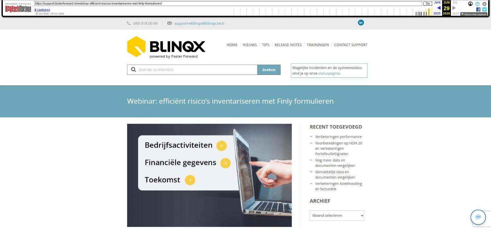

Webinar: efficiënt risico's inventariseren met Finly formulieren

Tekstinhoud
Voor de particuliere- en zakelijke markt presenteren Faster Forward en Finly een oplossing voor risicomanagement. De adviseur kan hiermee afscheid nemen van vragenlijsten in Word. De digitale formulieren zijn namelijk helder, makkelijk in te vullen en staan in de look-and-feel van het advieskantoor. Bovendien zijn de formulieren een handig hulpmiddel als gespreksstructuur en geven ze houvast tijdens het gesprek met de klant.
De naadloze integratie tussen Elements en Finly zorgt ervoor dat de risico-inventarisatie automatisch wordt bijgewerkt met klantgegevens. Ook worden relatiegegevens, zoals partner en kinderen, evenals productinformatie, automatisch in het formulier ingevuld. Als de inventarisatie is doorlopen, worden zowel het adviesrapport, als eventuele actiepunten vanuit Finly weer teruggestuurd naar Elements.
Ontdek de unieke combinatie tussen Elements en Finly op 27 november om 13.30.
Het webinar is terug te bekijken via deze link.
Inhoud webinar
Live demo van uitnodigen van klant vanuit Elements
Uitleg voordelen formulieren
Presentatie van verschillende formulieren i.c.m. invulvelden en mogelijkheden
Toelichting over Blinqx en eBlinqx
Live Q&A: genoeg tijd voor al je vragen
Samenwerking Elements en Finly
Faster Forward Elements is nu onderdeel van eBlinqx. Ook Finly is hier onderdeel van. eBlinqx verbindt de meest innovatieve software oplossingen voor de verzekerings- en hypotheekbranche. Dit heeft ervoor gezorgd, dat er voor Elements klanten nu ook een directe koppeling met Finly formulieren beschikbaar is.
Wat is Finly?
Finly biedt de ideale oplossing voor een naadloze ‘klantcontactreis’. Ze staan je bij vóór, tijdens en na een adviesgesprek. Met als doel om zowel voor de klant als de adviseur het optimale resultaat uit het adviesgesprek te halen. Lees hier meer over de mogelijkheden van Finly.
Wat is eBlinqx?
eBlinqx is het nieuwe alles-in-één platform voor financieel dienstverleners. De software is opgebouwd rond onze specialismen: Hypotheken, Verzekeringen en CRM. Zo krijg jij centrale toegang tot de beste oplossingen in de markt, gecombineerd met onze uitgebreide ervaring. Heb je behoefte aan een specifiek product, of combineer je alle elementen tot één centrale oplossing voor allround financieel advies? Met eBlinqx mix & match je precies wat jij nodig hebt. Dat is dé kracht van eBlinqx.
Hoe ziet het er uit?
Op de bovenstaande afbeelding zie je een klantview met een kleine checklist.
Op de bovenstaande afbeelding zie je de adviseursview van een inventarisatieformulier
Geplaatst op 16 november 2023 (Laatste update: 11 december 2023)